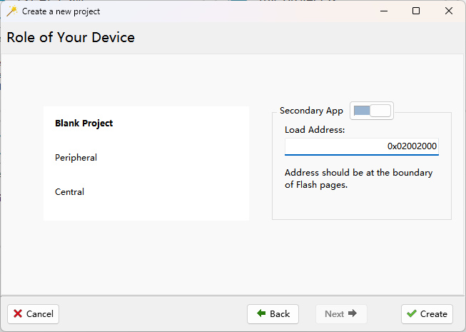

假设固件数据正确，FOTA 升级过程中如果意外掉电，固件是否会损坏并导致设备“变砖”？首先，ING918/ING916 都不会因为固件损坏而“变砖”，内置于 ROM 的 Bootloader 总是可用的。那么固件损坏的概率是多少？
升级时固件损坏的概率
-
对于 ING918，固件的替换升级由 ROM 内的 Bootloader 完成，最后一个步骤是擦除由
program_fota_metadata提供的元数据。如果在替换过程中掉电，再次上电后时会重新完成替换升级。 在最后一个步骤即擦除元数据的过程中意外掉电，那么元数据被破坏。再次上电时，如果元数据不幸地被 Bootloader 识别为有效，再次替换固件，但是元数据里包含的固件起始地址等信息已破坏，那么将导致固件损坏。 擦除元数据即擦掉 Flash 里的一个页， 以erase_flash_page的执行时间为参考，大约 29ms。也就是说，因为 FOTA 过程中电源失效而导致固件损坏的时间窗口是这 29ms。Bootloader 通过比对 32 bit
magic_number是否为既定值 0x5A5A5A5A 判断元数据是否有效， 我们假设擦除过程就是其中为 0 的 bit “缓慢”变为 1 的过程，如果意外中断，原来为 0 的比特变为 1 或者维持 0 的概率各为 $50 \%$。那么，元数据被破坏，再次上电时元数据里的magic_number仍为 0x5A5A5A5A 的概率为 $1/65536$。 -
对于 ING916，固件的替换及系统重启升级由 ROM 内的
flash_do_update函数实现。 如果在这个函数的执行期间意外掉电，将导致固件替换不完整、固件损坏。读取一个扇区再写入另一扇区约需要 42ms， 只考虑使用内置 Flash，flash_do_update最多可能替换约 256KiB 数据，即 64 个扇区，总耗时 2.7s。 也就是说，因为 FOTA 过程中电源失效而导致固件损坏的时间窗口是这 2.7s。
建立模型以估算概率。用 $X(t)$ 表示直到 $t$ 时刻电源失效事件发生的总数， 假定 \(X = \{ X(t), t \ge 0 \}\) 是速率为 $\lambda$ 的泊松过程。则第 $n$ 次和下一次电源失效事件的时间间隔的数学期望为 $1/\lambda$。 假设一个很糟糕的情况：意外掉电事件平均每 20 分钟发生一次，即 $\lambda = 1/(20 min)$。 在从 $t$ 开始长度为 $l $ 的时间窗口内至少发生 1 次电源失效事件的概率 $P_f(l)$ 为：
\[P_f(l) = 1 - P\{ X(t + l) - X(t) = 0\} = 1 - e ^{- \lambda l}\]于是，ING918 上固件损坏的概率为：
\[\frac{P_f(29ms)}{65536} \approx 3.6875 \times 10^{-10}\]作为对比，体彩大乐透七个球全部选中的概率为 $1/21425712 \approx 4.66729 \times 10^{-8}$， 福彩双色球七个球全部选中的概率为 $1/17721088 \approx 5.64299 \times 10^{-8}$。
而 ING916 上固件损坏的概率为：
\[P_f(2.7s) \approx 2.24747 \times 10^{-3}\]这里我们参照 ING918 的做法为 ING916 设计一个二级 Bootloader，因电源失效而导致固件损坏的时间窗口大约为 19ms
（执行一次 erase_flash_sector），再结合 magic_number，固件损坏的概率与 ING918 相近。
设计思路：将 platform.bin 的中断向量表搬走，腾出一个扇区。由于 ROM 内的 Bootloader 在启动后固定以 0x02002000 作为中断向量表读取栈顶地址和 Reset 入口地址，将二级 Bootloader 的中断向量表放置到 0x02002000 就可以全面接管芯片的启动流程。二级 Bootloader 启动时检查是否需要升级，不需要升级时直接跳转到 platform.bin 的 Reset 入口地址正常启动。
中断向量表搬移工具
这里 是用 Python 编写的中断向量表搬移工具， 其功能为：
- 将中断向量表从文件的开头移动到末尾；
- 删除 platform.bin 最前面的一个扇区，其下载地址从 0x02002000 改为 0x02003000；
- 更新
meta.json； - 向 platform.bin 写入更新后的中断向量表地址。
开发二级 Bootloader
- 尽快完成判断，并跳转到 platform.bin 的 Reset 入口地址；
- 在跳转到 platform.bin 的执行路径上，不得改写内存；
使用 Wizard 创建一个 ING916 新项目，选择 Blank Project 模板、Secondary App：

打开项目，把 sysdefs 文件、trace 模块等删除，确认项目可以成功编译。
升级用的元数据我们照搬 ING918 里的做法，
从 0x02002000 往下依次存放 N 个 block_info，升级完成后擦除。block_info 的定义：
typedef struct block_info
{
uint32_t size;
uint32_t dst;
uint32_t src;
uint32_t magic;
} block_info_t;
补充中断向量表
Wizard 生成的中断向量表将包含 8 个字节，如果需要可以补充。如果二级 Bootloader 足够小，一个扇区就足够存放， 那么烧录起来就很方便。所以二级 Bootloader 应该尽量简单，中断向量表一般也不要补充。
实现 Reset_Handler
; Reset Handler
Reset_Handler PROC
EXPORT Reset_Handler
IMPORT do_fota
; 检查 FOTA 标准位
LDR R0, =0x02002000 - 4
LDR R0, [R0]
LDR R1, =DEF_UPDATE_FLAG
CMP R0, R1
BEQ START_FOTA
; 正常启动
LDR R0, =0x02003000
LDR R0, [R0] ; R0 = vector address
LDR R1, [R0, #0x0]
MSR MSP, R1
LDR R1, [R0, #0x4]
BX R1
START_FOTA
LDR R0, =do_fota
BX R0
ENDP
这里的 DEF_UPDATE_FLAG 即 block_info_t 里的 magic。基于上面的讨论取一个二进制下含 1 个数较少的随机数。
清空 main
Bootloader 不需要 main 函数，清空其函数体：
main PROC
EXPORT main
ENDP
用 C 语言实现 do_fota
完整的参考代码如下：
#include <stdint.h>
#include <string.h>
#include "eflash.h"
#define DEF_UPDATE_FLAG 0x.........
typedef struct block_info
{
uint32_t size;
uint32_t dst;
uint32_t src;
uint32_t magic;
} block_info_t;
// 把数据从 Flash 拷贝到 Flash 的辅助函数：逐扇区读入内存再写入
static int flash_to_flash(uint32_t src, uint32_t dst, uint8_t *buffer, uint32_t size)
{
while (size > 0)
{
int r;
uint32_t block = size;
if (block >= EFLASH_ERASABLE_SIZE) block = EFLASH_ERASABLE_SIZE;
memcpy(buffer, (const void *)src, block);
r = program_flash(dst, buffer, block);
if (r) return r;
dst += block;
src += block;
size -= block;
}
return 0;
}
// 可以在这里做升级前的检查，可酌情设计检查方法
// 这里检查了目标地址是否按扇区对齐
static int check_fota_blocks(const block_info_t *p)
{
while (p->magic == DEF_UPDATE_FLAG)
{
if (p->dst & (EFLASH_SECTOR_SIZE - 1))
return -1;
p--;
}
return 0;
}
void do_fota(void)
{
const block_info_t *p = (const block_info_t *)(FLASH_BASE +
EFLASH_SECTOR_SIZE * 2 - sizeof(block_info_t));
if (check_fota_blocks(p) == 0)
{
// 检查通过，逐项拷贝
while (p->magic == DEF_UPDATE_FLAG)
{
// 注意：内存直接使用，不定义变量
flash_to_flash(p->src, p->dst, (void *)0x20002000, p->size);
p--;
}
}
// 擦除元信息
// 只有在这个动作执行期间电源失效，才有可能导致固件损坏
erase_flash_sector(FLASH_BASE + EFLASH_SECTOR_SIZE);
// 重启
NVIC_SystemReset();
}
编译、烧录
编译后，烧录到 0x02002000 位置。
应用开发
应用的开发照常进行，但在创建项目时有几个额外的步骤和注意事项：
-
使用 Wizard 创建应用时，选择“COPY to my project”的方式
-
调用 Python 工具搬移向量表
假设项目目录为 c:\cool_project，使用了 typical 软件包，那么执行命令：
python vect_relocate.py c:\cool_project\sdk\bundles\typical\ING9168xx -
在项目的快捷菜单里执行“Check & Fix”
打开项目，确认 platform.bin 的下载位置是否已更新为 0x02003000。此后的开发正常进行。
现在假设应用已具备了 OTA 升级功能，旧版本 SDK (< v8.4.6) 里必须使用 flash_do_update 完成升级。
现在编写一个与二级 Bootloader 配套的 program_fota_metadata 函数，
功能与 ING918 的 program_fota_metadata 类似：
int program_fota_metadata(const int block_num, const fota_update_block_t *blocks)
{
#define START (FLASH_BASE + EFLASH_ERASABLE_SIZE)
int i;
block_info_t info =
{
.magic = DEF_UPDATE_FLAG,
};
erase_flash_sector(START);
uint32_t addr = START + EFLASH_ERASABLE_SIZE - sizeof(info);
for (i = 0; i < block_num; i++, addr -= sizeof(info))
{
info.size = blocks[i].size;
info.dst = blocks[i].dest;
info.src = blocks[i].src;
int r = write_flash(addr, (uint8_t *)&info, sizeof(info));
if (r) return r;
}
return 0;
}
调用 program_fota_metadata 写入元数据，然后重启，即可由二级 Bootloader 完成升级。
总结
以上是二级 Bootloader 的一个参考实现，开发者在此基础上扩展功能，比如为元数据增加完整性保护、 进一步降低固件损坏概率，也可为新固件增加完整性保护、鉴权等。